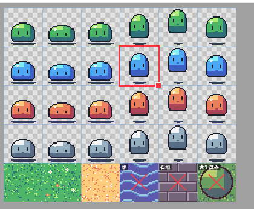
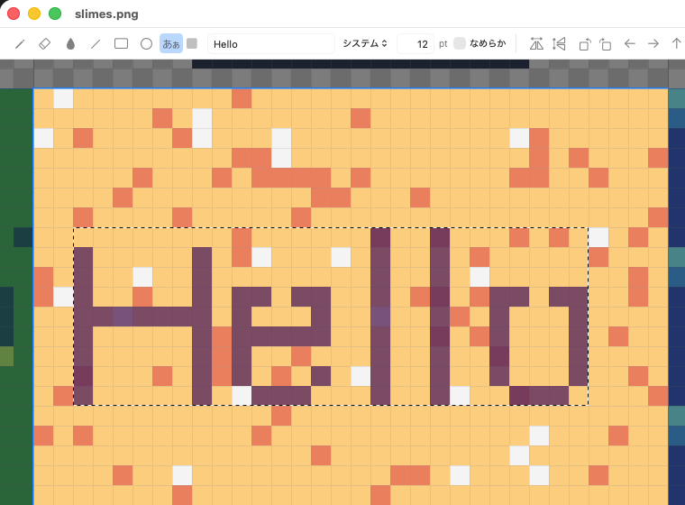
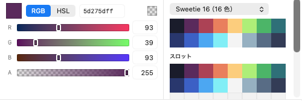
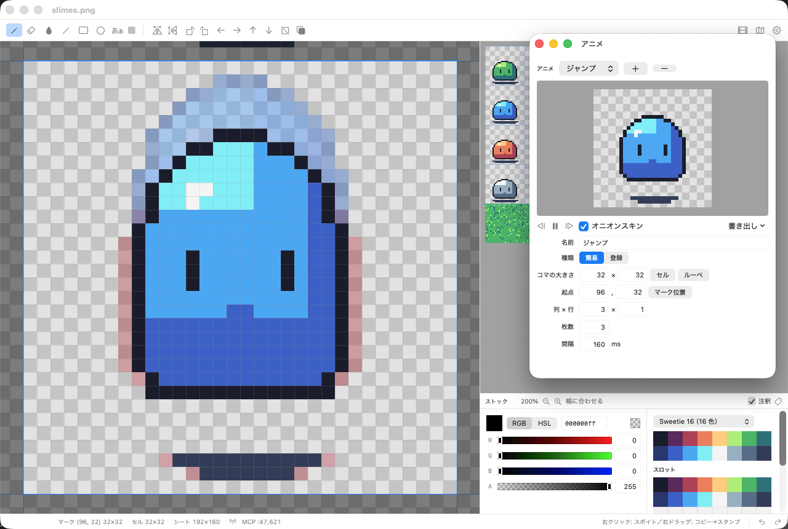
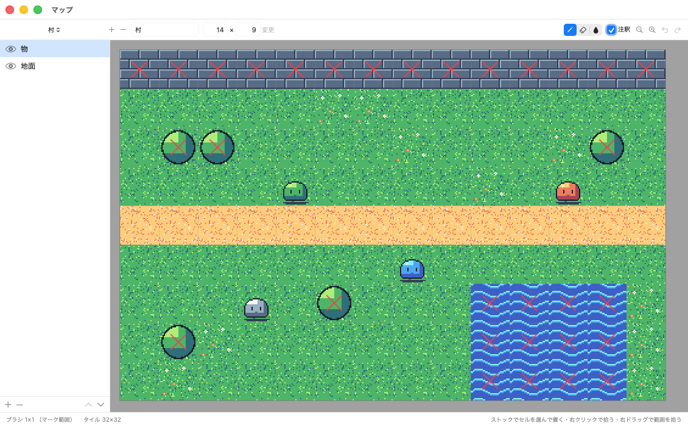
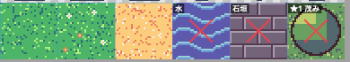

スプライトシート用
ドット絵エディター
歩行グラフィックやマップチップなど、同じ大きさの絵が格子状に並んだ PNG を編集する macOS 用のアプリです。
ダウンロードmacOS 14 以降・無料 · ソースからビルド

ストックとメイン
右のストックにシート全体を表示し、選んだ範囲（マーク）を左のメインで拡大して編集します。
- ストックのクリックでマーク位置を選択。セル単位・セルの 1/2・1/4・ドット単位でスナップ
- マークの右下をドラッグして範囲の大きさを変更。メインのホイールで 1/2・2 倍
- ストックでドラッグしてセルを入れ替え、右クリックでコピー、ダブルクリックで貼り付け
- 右クリックでスポイト、右ドラッグで範囲をコピーしてスタンプ

描画ツール
- ペン・消しゴム・塗りつぶし・直線・矩形・楕円（塗りつぶしあり）
- テキスト: フォントと大きさを指定して、アンチエイリアスなしの文字を配置
- マーク範囲の左右・上下反転、90° 回転、1 ドットずつのシフト
- 描画は常に置き換え（下の色と混ぜない）。最大 60 回の取り消し

色とパレット
- RGB / HSL のスライダーと 16 進数で描画色を指定（不透明度あり）
- サンプルパレット: PICO-8、DawnBringer 16 / 32、Sweetie 16、ENDESGA 32、ゲームボーイ
- 64 色のスロット。ドラッグで並べ替え、Shift で範囲選択して RGB / HSL のグラデーション
- 色を押している間、その色を使っている画素を点滅表示

アニメーション
- 簡易アニメ: 起点・列数・行数・枚数・間隔を指定
- 登録アニメ: コマの位置と表示時間を任意の順序で登録
- 別ウィンドウで常時再生。描いた内容がすぐ反映される
- オニオンスキン: 前のコマを赤、次のコマを青でメインに重ねて表示
- アニメ GIF・APNG・連番 PNG に書き出し（1〜8 倍）

マップの仮組み
- シートのセルをタイルとして並べ、つなぎ目や見え方を確認
- レイヤーの追加・並べ替え・表示切り替え
- ペン・消しゴム・塗りつぶし。ストックのマーク範囲をブラシとして使い、右クリックでタイルを拾う
- マップはセル番号の配列として JSON に保存

セルの注釈
- セルごとに名前・通行可否・重なり順を設定
- ストックとマップに × や ★ で表示
- JSON に保存するので、ゲーム側でそのまま読み込める

MCP
MCP サーバーを内蔵しています。Claude Code などの AI エージェントから、シートの確認・描画・注釈・アニメ・マップの編集ができます。
- 設定（⚙）で有効化。127.0.0.1 でのみ待ち受け
- 描画は 1 回の呼び出しごとにアプリで取り消し可能
claude mcp add --transport http \
nanodot http://127.0.0.1:47621/mcp対応フォーマット
| 開く | PNG、GIF、BMP、TIFF、JPEG |
|---|---|
| 保存 | PNG（RGBA）＋ 同じフォルダーの <名前>.nanodot.json（セル・パレット・アニメ・マップ・注釈） |
| アニメの書き出し | アニメ GIF、APNG、連番 PNG（1〜8 倍に拡大可） |
| クリップボード | PNG（他のアプリとの間でコピー・貼り付け） |